On Design, Testing and Why Some Unit Tests are Waste
Disclaimer
This article describes my personal approach to unit testing. This approach is not original by any means, but I found it beneficial to my own understanding to try to explain this to the public. Additionally, I have not tried this on large-scale projects so take the chapter about scaling with a dose of skepticism.
“The young man knows the rules but the old
man knows the exceptions.”
― Oliver Wendell Holmes
Introduction
Few years ago, I stumbled upon James Coplien’s essay titled “Why-Most-Unit-Testing-is-Waste” (a follow up here). While a bit provocative, I found it interesting, but I didn’t grasp the idea James tried to convey. The problem with the essay is that it tells what is wrong with unit testing, but does not show how to do it right. Since I don’t code every day any more, it took me few years to accidentally discover what James had in mind when I decided to test my toy project called “Star Drifter”.
An Example Application
Star Drifter is a simple space-based game written in Java and run within a browser (play here). Its architecture is depicted on Figure 1.
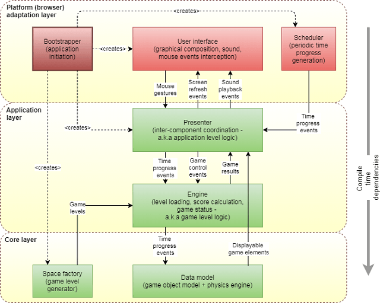
Star Drifter follows Uncle Bob’s Clean Architecture presented here, for convenience, in a layered manner. The Core Layer (or Enterprise Business Rules Layer) encompasses classes providing all the required logic of space flight simulation domain. This code is not “aware” of any I/O mechanism nor game rules and dependents only on Java standard library (though the Clean Architecture allows dependence on third party libraries containing specialized algorithms and data structures).
The Application Layer covers two layers of original Clean Architecture. Engine class contains all of the game logic like starting/stopping the game or calculating result, and is equivalent to Application Business Rules Layer of Clean Architecture. This class is not “aware” of any I/O mechanism and depends only on Core Layer and standard library. Presenter class on the other hand is responsible for coordination of Engine and Platform Adaptation Layer and is equivalent to Interface Adapters Layer of Clean Architecture. Being a coordinator, this class is aware of existence of I/O mechanisms (in this case GUI and scheduler), but it does not depend on any particular implementation. It specifies required interfaces of these functionalities itself (a separated interface pattern) and expects these functionalities to be passed as constructor arguments (an Inversion of Control pattern). The only compile time dependencies of this class are Engine class, Core Layer classes and the standard library.
The highest, Platform Adaptation Layer, comprises platform specific implementation of GUI, Scheduler and a bootstrapper responsible for gluing everything together. This layer is equivalent to Frameworks Drivers Layer of Clean Architecture. This code depends on Presenter class and some of the classes from Core Layer as well as platform specific libraries (GWT).
The most important factor that differs Clean Architecture form Layered Architecture is its strong insistence on platform independence of all code lying below (or surrounded by) Frameworks Drivers Layer which itself is void of any application logic (and preferably any complex logic). In case of Star Drifter, both Core Layer and Application Layer (green boxes) are platform independent and should be able to run on any Java implementation (e.g., Desktop, Android or as in this case, GWT). On the other hand, the Platform Adaptation Layer being platform dependent is as thin as possible with all classes (red boxes) following the "humble object" pattern as much as possible.
Testing Approach
Applying Clean Architecture to Star Drifter allowed me to test it automatically in an interesting way. The common approach to unit testing is to test each method of each class separately while providing mocks for every required dependency. The problem with this approach is that one ends up with explosive number of test cases (multiple test cases for each method f each class) and heavy use of mock framework or manually written test doubles (generally each class needs to be mocked at some point). This approach tends to be costly in terms of maintenance (a lot of test code to write and maintain). It may also be slow to execute (generating mocks at runtime can be slow if number of mocks is large). In order to avoid these problems, I decided to test the entire application end-to-end through its “outer API” following the strategy generically described in Figure 2. An “outer API” shall be an established API between automatically testable inner application logic and non-testable and replaceable adapters to “outer world”.
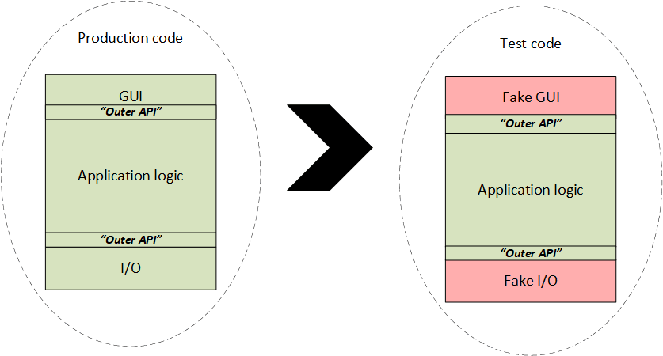
In order to achieve it, I tested everything through Presenter class by replacing Platform Adaptation Layer with hand-written test doubles as depicted in Figure 3.
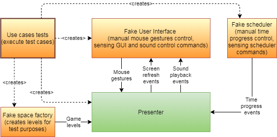
The advantages of this approach turned out to be quite staggering.
Frugal Tests
The first advantage of this approach was a very small number of tests required to cover all of the functionality compared with “per-method-per-class” approach. This was achieved because Star Drifter’s inner layers (Core Layer and Application Layer) have low boundary to area ratio (low external to internal complexity) sometimes also called volume-to-surface ratio. This means that there are many more classes and methods private to inner layers than externally visible to Platform Adaptation Layer. The abstract visualization of this concept is presented in Figure 4, where only two of the inner classes (Class 3 and Class 10) expose some of their functionality through the outer layer.
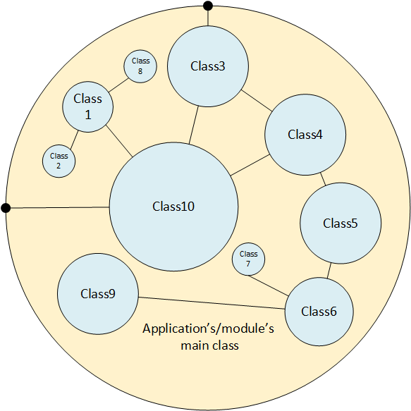
In order to estimate this ratio for Star Drifter, I decided to count all methods within inner layers visible to Platform Adaptation Layer and divide this number by number of all non-private methods of classes within Core and Application layers. The result presented in Table 1 is 0.34 which is way lower than 1.
Table 1. Estimation of boundary-to-area ratio for Star Drifter
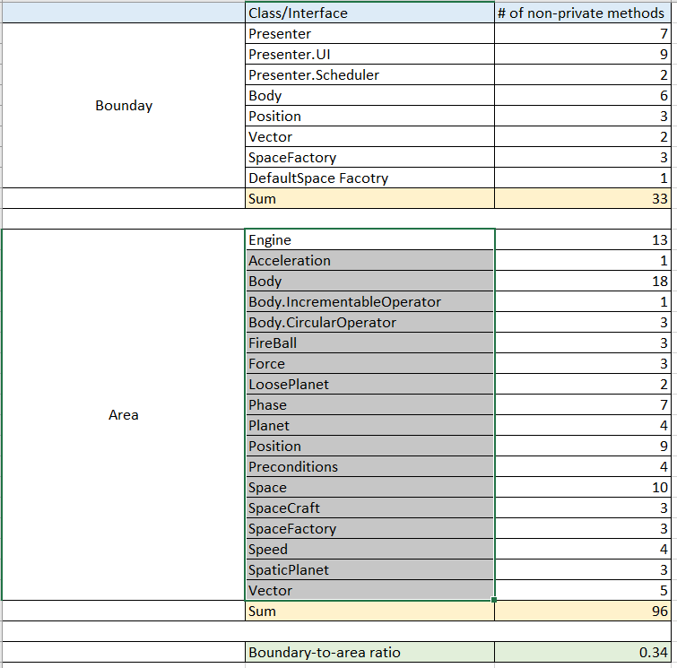
The approach of testing everything end-to-end paid big in case of Star Drifter
resulting in only 23 tests (methods annotated with @Test) covering
all non-GUI functionality (I intentionally haven’t tested GUI automatically).
If every non-private method of every class was tested separately,
I’d probably end up with at least (33+96)*2 = 225 test cases to
maintain (assuming one test for successful scenario and one test for failure
scenario for every non-private method of every non-GUI class).
This is an order of magnitude difference in maintenance cost of test suite!!!
Code Streamlining
The second advantage of this testing approach was the ability to streamline the code by removing dead and redundant code. When writing method of a class, I habitually write code to validate values of arguments and cover all possible cases of execution (I only loosely follow TDD). If I have written multiple tests to verify the behavior of every method of every class, the code coverage tool would always show full coverage of code under test. By testing the inner layers of Start Drifter all at once, the coverage tool helped me to spot many places where method argument validation was not necessary because callers never passed invalid values in the first place. Additionally, I was able to remove some redundant execution paths, which were never executed in any possible scenario.
No Mocking Framework
The third advantage of this approach is that I did not need to use mocking framework at all. Since I only needed to mock two classes, I’ve written simple test doubles by hand. In case of testing “per method per class”, the use of mock framework would be unavoidable.
What Makes a Good Test?
In order to continue, I need to make a short digression and look at what constitutes good tests according to the person probably most informed in this topic. Kent Beck specifies the 12 characteristics of good tests (video here):
- Automated — Tests should run without human intervention.
- Deterministic — If nothing changes, the test result should not change.
- Isolated — Tests should return the same results regardless of the order in which they are run.
- Composable — It shall be possible to run any subset of the whole test suite, if tests are isolated, then I can run 1 or 10 or 100 or 1,000,000 and get the same results.
- Behavioral — Tests should be sensitive to changes in the behavior of the code under test. If the behavior changes, the test result should change.
- Structure-insensitive — Tests should not change their result if the structure of the code changes.
- Fast — Tests should run quickly and give feedback within seconds.
- Writable — Tests should be cheap to write relative to the cost of the code under test.
- Readable — Tests should be comprehensible for reader, invoking the motivation for writing this particular test.
- Specific — If a test fails, the cause of the failure should be obvious.
- Predictive — If the tests all pass, then the code under test should be suitable for production.
- Inspiring — Passing the tests should inspire confidence.
In the following chapters, I will explain how one of them (structure-insensivity) affects development cost.
Easy Refactoring
The last advantage of the used testing approach is easy refactoring. Unit tests can allow or prevent refactoring depending on how they are written. The feature, which mostly decides about it, is structure-insensitivity (Kent Beck explains this by example using a single class). Tests written in “per-method-per-class” approach can (and should) be structure-insensitive in context of classes’ internal structure, but the problem arises when a programmer follows the practice of creating classes that represent one concept and do one thing. In this situation, classes and methods become very small. For example, the average number of lines of code in Start Drifter’s Core and Application layers’ methods is a little below 2 with the most frequent value of 1. With such small methods, most of the functionality emerges from cooperation of multiple objects of various classes. When refactoring, a large percentage of refactorings involves changes to classes’ behavior and their public APIs (moving behavior from one class to another) even though the behavior of entire application/module does not change. Every time this happens, tests need to be adjusted. This makes them brittle, and effectively structure-sensitive. This also makes them expensive to maintain and vulnerable to errors as every change potentially introduces a bug to the test itself or unintentionally changes its semantics. By testing at boundary level, I could freely juggle the responsibilities of classes (move methods between classes, introduce new classes, delete classes) as long as the behavior visible to Platform Adaptation Layer did not change.
The Distribution of Structure-(In)sensivity
In order to keep tests easy (and cheap) to maintain, one needs to keep them as structure-insensitive as possible. I have shown that writing test “per-method-per-class” does not necessarily mean structure-insensitivity. The test can be structure-insensitive in reference to internal structure of each class, but still be structure-sensitive in reference to internal structure of the entire application. This means that testing entire application through the “outer API” seems to produce the most structure-insensitive tests there can be. Nevertheless, reality is seldom such simple and often it is impossible (or just inconvenient) to test some parts of the code entirely through the “outer API”. In such a situation, a number of structure-sensitive tests need to be written. In order to keep the cost of maintenance low, the number of such tests shall be small, and the behavior they verify shall not change often (a quick cost/benefit analysis shall be done be done before introducing them). Figure 5 shows the hypothetical cost-optimal distribution of structure-sensitive and structure-insensitive tests within a project which, I guess, follows some sort of power curve.
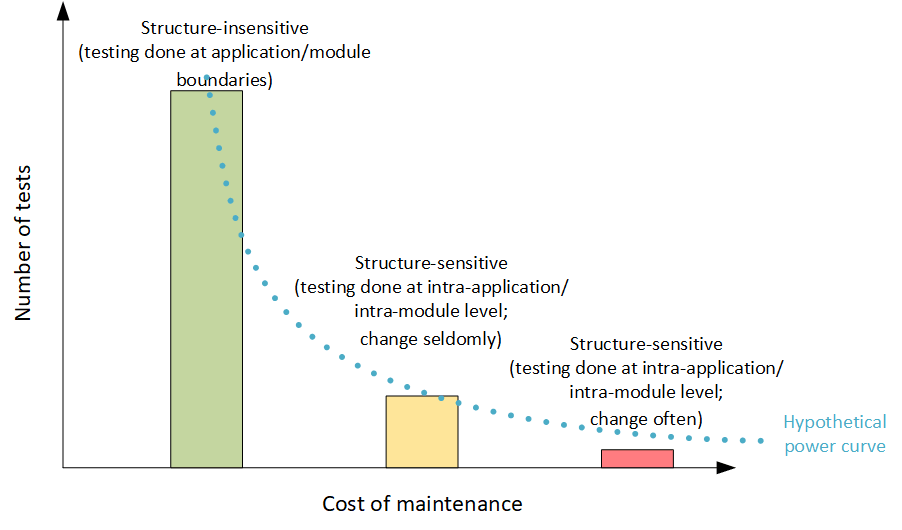
Star-Drifter follows this distribution quite nicely with the numbers as follows:
- Structure-insensitive – 18 tests
- Structure-sensitive, seldom changing – 5 tests
- Structure-sensitive, often changing – 0 tests
The only structure-sensitive tests of Star Drifter verify the behavior of the gravity force, which is inconvenient to verify through the “outer API”. The positive side is that the behavior of the verified algorithm does not need change at all.
The Structure of Tests
So far, I have written about properties of the tests but haven’t shown any so far. In order to dive into details, first I need to uncover the rationale behind the chosen structure of tests. The first step towards this is realization that the behavior of every program can be described from an outside as a state machine (not necessarily finite-state machine). Sometimes, the state is internal to the application (like in case of text editor) and sometimes, it is external (like in case of file system utilities where the state is mostly stored in a file system itself). Each state machine can be described by the set of states and transitions between them. Automated tests, by definition, need to verify whether, given the initial conditions, the transitions between states happen or not. A single test constitutes a scenario of one or more such transitions, which in case of testing through the “outer API” are equivalent to use cases implemented by the application. Since there are usually many possible paths through the graph of states, there are also many possible use cases to be tested as depicted in Figure 6. I got this understanding from an inspirational talk by Kevlin Henney, but extended it a little to cover whole application scenarios. I also like to think about tests as use cases as it makes me easier to discover them.
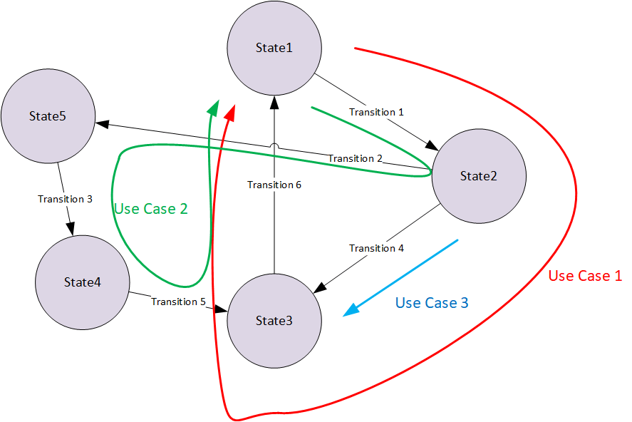
Figure 7 shows real state diagram describing Star Drifter game with two arrows denoting two example scenarios coded as tests.
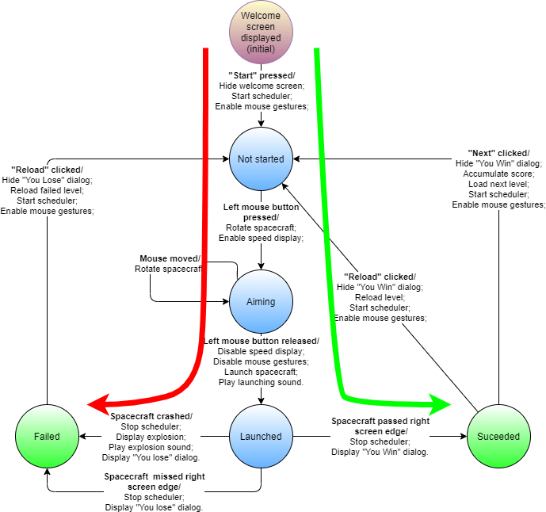
The red arrow denotes the
scenario of crashing the spacecraft into a planet implemented in
OnePlanetSpaceUseCases -> presenter_displaysYouLoose_whenCraftCrashesIntoPlanet.
The scenario includes transitions between Aiming, Launching
nd Failed states, verifying that the transitions happen in the right order.
The green arrow denotes the
scenario of successfully navigating the spacecraft through the space implemented
in
EmptySpaceUseCases -> presenter_displaysYouWin_whenCraftReachesRightEdgeOfSpace.
This scenario includes transitions between Aiming, Launching
and Success states verifying, again, that the transitions happen in
the right order. In order to make the scenarios describe real use cases as close
as possible, I made sure that the public methods of
Presenter class represent user actions (aimingStarted,
aimingFinished, playAgain, playNext,…)
and both GUI and Scheduler classes follow
“humble object”
pattern being controlled by Presenter through required interfaces
(Presenter.UI and Presenter.Scheduler).
Short Scenarios vs Long Scenarios
With treating tests as use case scenarios, the question of scenario length
arises. Longer scenarios will result in fewer tests, but make each tests less “specific”
(see characteristics of good tests).
Again, the most proper way to resolve this seems to be a cost/benefit analysis
to balance the number of tests with their “specificness”. Long scenarios covering
many transitions are probably better for “happy path” and short scenarios for
error conditions (covering only one transition). Just remember that when creating
error scenario, you still want to execute one error condition per test though it
does not mean that you shall have only one “assert” statement per test.
There are two drawbacks of long scenarios. First, it may be difficult to name
them meaningfully. Second, when behavior of code under test changes, more than
one scenario will fail at the same time because of inevitable redundancy.
The advantage of long scenarios is that less setup is required so they may be
faster to write and execute.
Naming and Structure
I follow a naming convention stating “what_exibitsWhatBehavior_underWhatConditions”
(e.g. presenter_displaysYouLoose_whenCraftCrashesIntoPlanet).
This reads pretty well and allows sensible sorting with IDE’s “file outline”
view as shown in Figure 8.
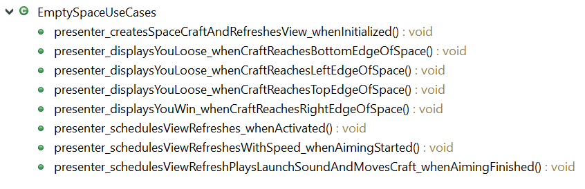
I also group tests (use case scenarios) into classes with meaningful names
ending with “UseCases” suffix (see Figure 9).
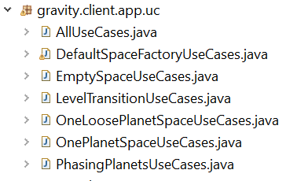
Grouping lets me quickly find the particular scenario when I need to, and
using “UseCases” makes it easier for me to think about all possible ones.
I often start with class name denoting set of use cases and then try to find all
the possible ones by writing their names as comments in the body of the class as
shown below. Only later, I expand each scenario name into a test method.
class EmptySpaceUseCases {
//presenter_createsSpaceCraftAndRefreshesView_whenInitialized
//presenter_schedulesViewRefreshes_whenActivated
//presenter_schedulesViewRefreshesWithSpeed_whenAimingStarted
//presenter_schedulesViewRefreshPlaysLaunchSoundAndMovesCraft_whenAimingFinished
....
}
When writing individual scenarios for Star Drifter, I generally followed the established pattern of:
- GIVEN – Here, I set up fixture.
- THEN (optional) – I may verify whether fixture is correct (it may be useful sometimes).
- WHEN – Here, I trigger transition from “State 1” to “State 2”.
- THEN – Here, I test whether expected behavior happened, whether unwanted behavior did not happen and that contractual invariants between code under test and external world still hold.
- WHEN (optional) – Here, I trigger transition from “State 2” to “State 3”.
- THEN (optional)– etc.
An example below shows this action:
@Test
public void presenter_displaysYouLoose_whenCraftCrashesIntoPlanet()
Below is the GIVEN section when I initialize object under test. I always do
it in test method or wrap it in factory method. I never put this initialization
code into @Before method as this is the place to initialize dependencies
of the code under test (test doubles in this case). In this example, I also clean
the state of fake GUI as I test this in a separate scenario.
Presenter presenter = new Presenter(this.view, this.spaceFactory, this.scheduler,2);
this.view.clearAll(); // clear recorded view refreshes so far
Below is the first WHEN in the transition from “Welcome screen displayed” state to “Not started”. It is not followed by THEN section, because I verify this transition with a different test. This is an example of a tradeoff. If the THEN section is small (few assert statements) or can be extracted into a meaningful helper method, then it makes more sense to include it and reduce number of tests, otherwise it makes more sense to create a separate test for the transition.
presenter.start();
Here follow two WHEN sections that take us through “Aiming” state
to the “Launched” state.
presenter.aimingStarted(initialCraftPosition.getX() + initialSpeed * speedFactor,
initialCraftPosition.getY());
presenter.aimingFinished(initialCraftPosition.getX() + initialSpeed * speedFactor,
initialCraftPosition.getY());
Then comes the first THEN section. I check whether externally visible
invariants of the code under tests hold true (a contract invariants between
Presenter
and GUI (e.g., “Spacecraft is never null.”). In other words,
it checks that things we don’t want to happen actually don’t happen.
I this is a bit redundant, as I call this method later as well, but helps spot
problems earlier.
this.scheduler.assertThatInvariantsHoldTrue();
This is the last WHEN section, which increments time enough to crash spacecraft into a planet.
this.scheduler.run(oneHundredAndEightTimes);
Below is the final THEN section which verifies whether appropriate
GUI
and Scheduler
methods were called appropriate number of times or not at all
(again, I want to make sure that things I don’t want to happen actually don’t happen)
and that the spacecraft is in appropriate state (it became a fireball).
In order to improve readability, I introduced helper methods to test doubles
(GUI
and Scheduler)
and I replaced some numeric constant with static variables
(e.g., “private final static in oneTime = 1”).
this.view.assertThatAimingEnabledWasCalled(oneTime);
this.view.assertThatAimingDisabledWasCalled(oneTime);
this.view.assertThatRefreshWasCalled(oneHundredAndEightTimes);
this.scheduler.assertThatInvariantsHoldTrue();
this.scheduler.assertThatCancelWasCalled(oneTime);
this.scheduler.assertThatSheduleWasCalled(oneTime);
FakeUI.RefreshRecord record = this.view.refreshCalled.get(oneHundredAndEightTimes-1);
record.assertThatNumberOfPlanetsIs(1);
record.assertThatCraftPositionIs(finalCraftPositionToRight);
record.assertThatCraftSpeedIs(Speed.zero());
record.assertThatCraftNameIs("fireball");
record.assertThatScoreIs(0);
record.assertThatLevelNumberIs(2);
Body planet = record.planets.get(0);
assertEquals("rocky", planet.getName());
assertEquals(21.599, planet.getAngle(), 0.001);
assertEquals(0, planet.getPhaseIndex());
this.view.assertThatLaunchWasPlayed(oneTime);
this.view.assertThatExplosionWasPlayed(oneTime);
this.view.assertThatSuccessWasShown(zeroTimes);
this.view.assertThatFailureWasShown(oneTime);
this.view.assertThatRefreshWithSpeedWasCalled(zeroTimes);
this.view.assertThatInvariantsHoldTrue();
}
When writing test scenarios, I try and think about cost/benefit of the checks
I make and strive not to check things I don’t care about. For example, in case of
Star Drifter, I check that refresh
is called particular number of times or I do verify that GUI is never called with
null arguments but I don’t verify the order of planets passed to GUI
or score calculation correctness as they don’t matter to me. Undefined behavior
is a way of reducing development costs.
Scaling Out
In previous chapters, I described my experiment with unit testing of a relatively small application end-to-end through the “outer API”. It is not difficult to guess that this approach would fail miserably for a big application implementing hundreds of use cases. In order to fight this complexity, a modularization approach needs to be employed and then each module needs to be tested separately with relatively few cases smoke-testing inter-module interactions. In order to achieve that, modularization needs to be done in a particular way.
Often, applications follow a classical layered decomposition where each layer contains specified part of functionality, which needs to be integrated with other layers to provide full implementation of the use cases supported by the application as depicted in Figure 10. There are two problems with such decomposition:
First, none of the modules implements any use case entirely. This means that tests of such modules can cover only parts of use cases and cannot guarantee, that after integration software implements these use cases without gaps.
Second, when the behavior of a particular use cases changes, inter module interfaces often change as well which contradicts the idea of modules as entities that contain and isolate change. This prevents teams developing these modules to leverage modularity in order to improve independence and productivity, since constant inter-team agreements need to be made.
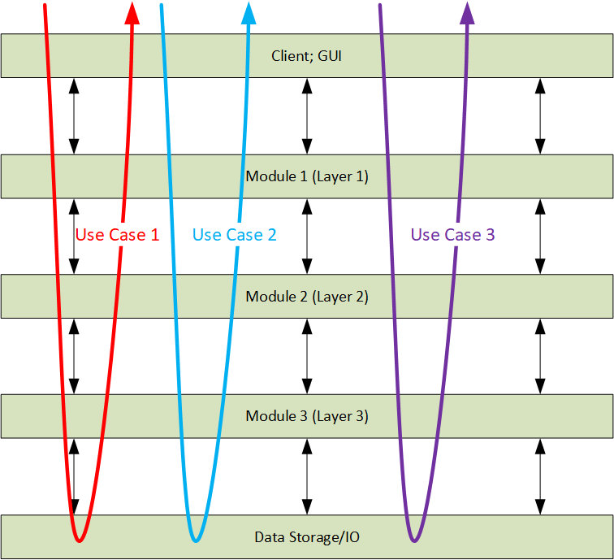
To overcome these problems, modules should be coarse grained and strive to be “vertical”. It means they should encompass entire execution flows of multiple related use cases from client/GUI to data storage and back as depicted in Figure 11. Inter module interfaces should be small and generic, and relatively stable so that each module can be developed by separate team without the need of constant coordination. Additionally, if “humble object” pattern is used to implement both Client/GUI and Data Storage/IO, then test case scenarios will closely represent application usage scenarios as described by requirements/stories/etc.
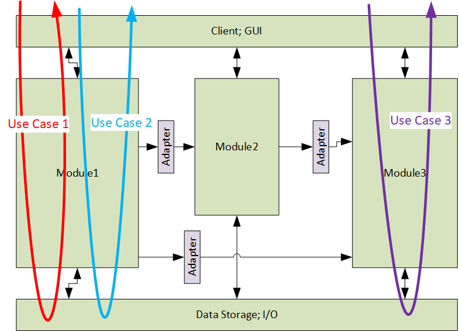
Testing It at Scale
In order to test entire modules in a multi module application, a specific project structure, as depicted in Figure 12, can be helpful (Java convention used).
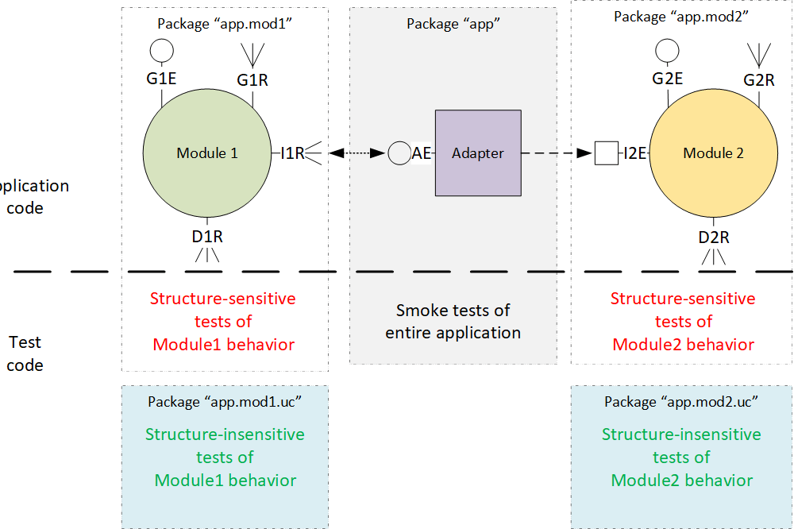
Assuming two modules within application, the application code should be divided
into three packages, a top level package “app”, an “app.mod1”
package holding implementation of Module1 and “app.mod2”
package containing implementation of Modul2.
This follows “package by feature”
approach which allows using “package private”
scope to control visibility of classes and methods constituting particular module.
In a real application, these modules could for example, implement customer
management use cases, order processing use cases, payment processing use cases and so on.
Modules should communicate with their GUI through GxE (exposed) and GxR (required) interfaces and with their data storages through Dx interfaces. Modules should communicate with each other through a series of interfaces: I1R is and inter-module interface required by Module 1, I2R in an inter-module interface exposed by Module 2 and AE is an interface exposed by adapter which implements I1R and calls I2E effectively decoupling both modules and implementing “bounded context” pattern (translation of equivalent data types) if necessary. All required interfaces should be defined using “separated interface” pattern (see Presenter.UI as an example).
Package “app” is a top-level package containing application
bootstrapping and glue code. It needs to “know” how to instantiate all modules,
wire them together and make it all run. It shall not contain any domain logic.
It shall not expose any interfaces to other packages, so no other packages shall
depend on it. It should encapsulate the third party framework used by application
if any. All of its classes should generally be “package private”. The automated
tests residing in this package should be just smoke tests (there should be very
few of them) verifying if all modules and adapters fit together but should not
try to test any actual application logic.
The module packages (“app.mod1” or “app.mod2”)
should contain the actual application logic. Most of the classes in these modules
should be “package private”. Only the classes defining module’s interfaces shall
be public. These packages should contain very few automated tests
verifying package private details otherwise difficult to verify through modules’
interfaces (in case of Star-Drifter only gravitational force algorithm is verified
this way). It is desirable that these algorithms don’t change very often.
Each module package should have an associated test package (“*.uc”) containing all structure-insensitive test scenarios for it. Such separation makes it easier to spot module implementation details leaking into module’s interface. It also forces tests to be more behavioral as it is difficult to access internals of module’s implementation from another package. This may feel like unnecessary constraint at the beginning, but it allows cheap refactoring in the long run. Another advantage is that one can easily select to run only the tests of the module one is currently working on (composable tests).
Keeping modules “vertical” and controlling inter-module interfaces (Ix interfaces) brings another advantage. If one needs to change interfaces between modules very often when adding functionality, it is a hint that either modules are too small to encompass useful functionality or boundaries between them are in the wrong places. Inter-module changes should be considerably less frequent (an order of magnitude comes to mind) than intra-module changes It is generally accepted that good design with proper modularity encapsulates changes. The changes to inter-module interfaces, when happening, should follow the pattern:
- Most frequent – adding argument to a method (or field to an object
passed as methods argument); or adding return value to a “
void” method; - From-time-to-time – nominating method argument (or return value) to a more complex type;
- Almost-never – adding or removing methods to change interaction patterns between modules.
The last suggestion is that each module should preferably be instantiated by a single object hiding internal complexity and encapsulating behavior of the module so that tests can be fully structure-insensitive.
How to Get to Structure-Insensitive Tests?
It is usually not possible to get structure-insensitive tests right from the beginning but this state can be achieved gradually. It starts with an experimentation phase with some crude throw away tests. You start writing the module tests after the architecture gets some shape but before any substantial functionality gets implemented. Then you refactor constantly (with tests providing immediate feedback) while adding new features to the module (following TDD if you like). As time goes, you also polish modules’ interfaces maintaining low boundary-to-area ratio). Figure 13 shows this process graphically.
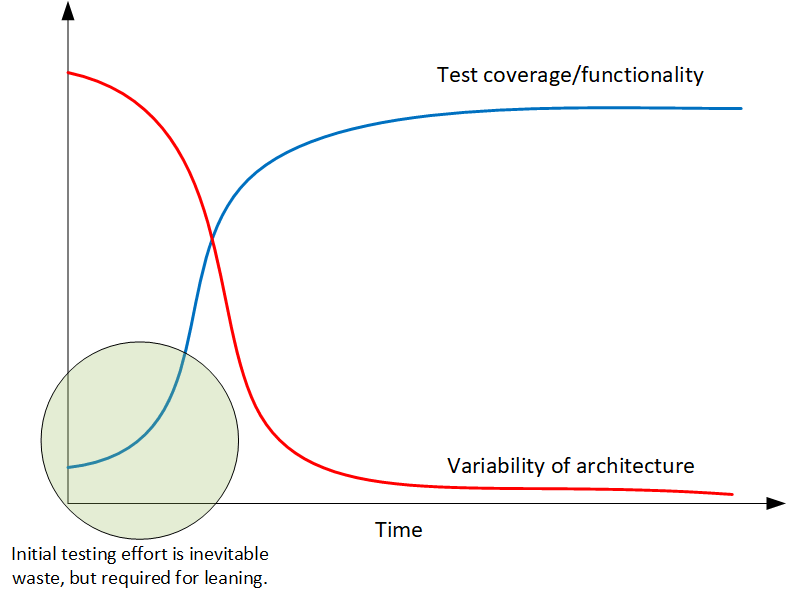
So, Are Unit Tests Waste?
According to James Coplien:
“In most businesses, the only tests that have business value are those that are derived from business requirements. Most unit tests are derived from programmers' fantasies about how the function should work: their hopes, stereotypes, or sometimes wishes about how things should go. Those have no provable value.”
In my opinion, most unit tests practiced as a separate test case per-method-per-class provide little return of investment. If programmers follow a good practice of designing small classes, most of the application logic gets realized as interactions between objects of various classes. In this situation, unit tests become structure-sensitive in the context of application or module internal structure and thus prevent refactoring. Additionally automated tests, which change often, are not very reliable as every modification has non-zero chance of introducing error into test itself. Therefore, I think that testing entire modules by aligning test scenarios close to real application use cases is a sweet spot (providing highest return of investment) between testing each class separately (which seems to be waste) and testing entire application (which may be difficult and slow).
Appendix A: Naming Things
Naming things is inherently difficult, yet critical stuff in the field of software development, which contrary to biology or medicine, uses a very limited terminology. Testing sub-domain is no exception. There is always confusion when talking about tests about what terminology to use. Shall a particular test suite be called unit tests (what is unit then), integration tests (what things get integrated), system tests (what comprises the system)? I personally prefer the approach abstracting form nomenclature based on code structure, which instead concentrates more on where particular test suite runs. This gives me three suites of tests to distinguish:
- Developer tests – are any kind of tests regardless of abstraction level, that can be run on developers machine and give feedback in reasonable time (preferably within seconds) to provide effective feedback. It doesn’t matter whether these tests verify behavior of one method or entire system as long as they run on developers machine and are fast.
- Lab tests – are any kind of tests that require setup of entire system for end-to-end, performance, stress testing, etc. which run too slowly (usually overnight) to provide immediate feedback. They may require physical lab with dedicated hardware and hardware stubs or virtual lab running totally in the cloud but it doesn’t change their nature.
- Production tests – are usually acceptance tests performed by rolling change into production while making the change easy to roll back. It does not matter whether the tested change gets enabled for all uses or just a selected group as long as it is easy to deactivate it if users don’t like it.